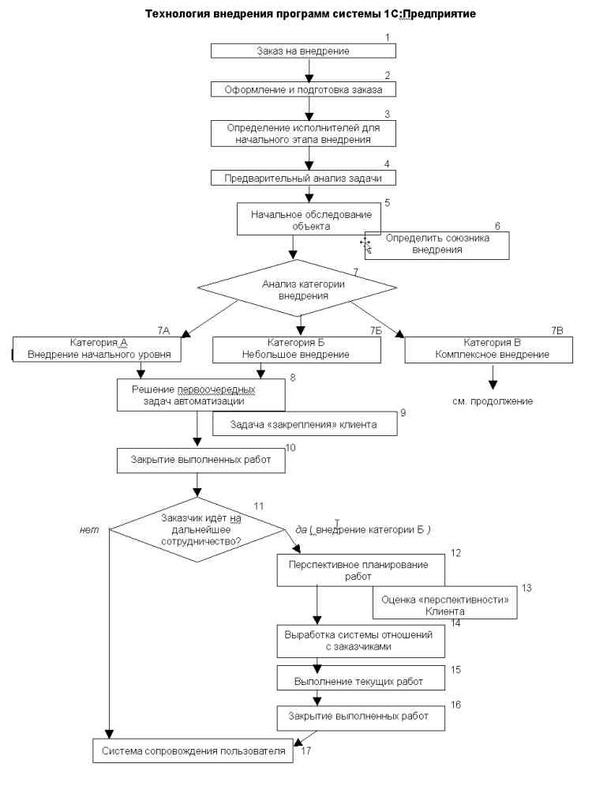

А.В. Поляков, В.Л. Ожигов.
г. Москва, ул. Каланчевская д.29, тел.: (095) 262-1756, 262-9347, факс: (095) 262-0470, info@xtek.ru http://www.xtek.ru
От авторов
В предлагаемом материале представлен вариант технологии процесса внедрения, который мы хотели бы обсудить с коллегами из других франчайзинговых фирм.
По нашему опыту многие внедренцы (особенно начинающие) часто недостаточно четко строят организацию своих внедрений. В комплексных внедрениях проблема организации процесса ведения проекта стоит еще более остро. «Разрывы» в действиях сотрудников фирмы-франчайзи, причастных к выполнению задач автоматизации заказчиков могут привести к ошибкам, затягиванию сроков реализации, недовольству со стороны клиентов и т.п. Т. е. напрямую |могут сказаться на успехе внедрения.
В этой связи, на наш взгляд, назрела необходимость составить определенный набор требований для каждого этапа процесса внедрения, рекомендуемых к выполнению.
Наш материал построен следующим образом.
В начале мы предлагаем общую схему технологии внедрения системы программ 1С:Предприятие. Схема наглядно представляет последовательность выполнения задач. Далее применительно к схеме представлено краткое описание задач и набор типовых действий специалистов фирмы-франчайзи.
Конечно, линейность здесь довольно условна. Задачи могут пересекаться и объединяться. Многие из них растягиваются на несколько этапов. Не всегда представляется возможным выполнение задачи именно в предлагаемой последовательности и т.п.
Хотим выразить огромную благодарность нашим коллегам Жутаевой И., Бушуеву Е., Савину А., Лисогору Д., Мифтаховой М., за помощь в подготовке материала.
Ждем отзывов и предложений. Поляков А.В., Ожигов В.Л. Компания «ИКС Технологии» (г. Москва)
P.S.
При изложении технологии применены следующие ДОПУЩЕНИЯ:
· КЛИЕНТ уже ВЫБРАЛ СИСТЕМУ (если это касается внедрений категорий А и Б; см. задачу 7) с помощью грамотных специалистов фирмы-франчайзи и его выбору оказался правильным и рациональным;
· ВНЕДРЕНИЕ 1С:Предприятия - оказание франчайзинговых услуг любого объема: от решения частных задач автоматизации до внедрения «в комплексе». Минимальный набор услуг предоставляемых внедренческими фирмами определен Франчайзинговым договором (рекомендации по оказанию услуг см. [1, раздел 2.3], [2, раздел «Типовой набор услуг»]).
Литература, используемая в контексте ссылок:

1. Заказ на внедрение.
РУКОВОДИТЕЛЬ ОТДЕЛА ВНЕДРЕНИЯ (здесь и далее: или диспетчер) принимает заказ от клиента, если тот обращается за оказанием услуг внедренческой фирмы.
2. Оформление и подготовка заказа.
РУКОВОДИТЕЛЬ ОТДЕЛА ВНЕДРЕНИЯ должен заполнить бланк заказа утвержденной формы в журнале заказов. Все поля бланка заполняются в обязательном порядке на основе диалога с клиентом (рекомендации по перечню необходимых сведений и форме бланка заказа см. [I, раздел 3.2.1, 7.11], [2, раздел «Типовая организация обслуживания»]).
Затем подготавливается сопроводительный ПАКЕТ ДОКУМЕНТОВ и ПРОДУКТОВ для заказа: документы, требуемые для оформления взаимоотношений с заказчиком и закрытия выполненных работ, сопроводительная методическая документация и продукты, набор рекламно-информационной продукции. Рекомендации по формам документов и методике их оформления см. [1, разделы 3.2.5, 7.2-7.10].
Проверяется наличие на складе ПРОГРАММНОГО ПРОДУКТА, в том случае, если внедрение включает его доставку и установку.
Ответственным за подготовку пакета документов и продуктов является руководитель отдела внедрения.
3. Определение исполнителей для начального этапа внедрения.
РУКОВОДИТЕЛЬ ОТДЕЛА ВНЕДРЕНИЯ определяет исполнителя для начального этапа работ у клиента.
Основные критерии выбора: специфика заказа, предметная специализация (компонента 1С:Предприятия, спектр выполняемых услуг и пр.) и опыт «кандидата», отраслевая специализация (наличие «готовых решений» и наработок на рынке деятельности заказчика), текущая загрузка.
Далее руководитель отдела внедрения ставит задачу исполнителю на выполнение работ, исходя из данных бланка соответствующего заказа и диалога с клиентом.
4. Предварительный анализ задачи.
ЭКСПЕРТ (в т.ч. технический специалист) должен подготовиться к предварительной беседе с клиентом на основе бланка заказа и обсуждения задачи с руководителем отдела внедрения.
Далее эксперт связывается с клиентом для выяснения деталей предстоящей автоматизации, договаривается о своем визите.
Эксперт должен взять с собой на заказ ПРОГРАММНЫЙ ПРОДУКТ (в случае надобности; и проверив работоспособность ключа защиты и носителей информации) и ПАКЕТ ДОКУМЕНТОВ, уточнив при необходимости правильность их заполнения.
5. Начальное обследование объекта.
ЭКСПЕРТ выезжает для выполнения заказа на основании договоренности с клиентом.
На месте экспертом уточняется предполагаемый спектр реальных задач внедрения (в т.ч. определяется круг первоочередных задач автоматизации). При необходимости вносятся соответствующие корректировки.
Здесь важно добиться одинакового понимания проблем, для чего уже на этом этапе начинается процесс ПОДГОТОВКИ специалистов заказчика к различным аспектам внедрения, его технологическим и организационным особенностям.
Эксперт при выполнении задачи 5 должен выяснить и зафиксировать всю необходимую информацию, в том числе для более точной оценки категории (см. задачу 7) и объема внедрения, а также возможностей клиента. Рекомендации по списку необходимых сведений см. [1, раздел 3.2.1].
Рекомендации по методике общения с клиентами и ведению переговоров см. соответственно [1, разделы 3.2.2 и 3.2.3].
6. Определить союзника внедрения.
Одной из важнейших задач ЭКСПЕРТА при выполнении задачи 5 является определение отв. лица или круга лиц со стороны заказчика, которые в первую очередь заинтересованы в успешной автоматизации. Тесное сотрудничество с ними при выполнении внедрения поможет сделать работу эксперта более продуктивной. Возможные варианты см. в задаче 13.
Кроме того, важно обеспечить: а) поддержку внедрения со стороны руководства заказчика, б) понимание важности внедрения как такового со стороны всех причастных к этому лиц заказчика.
ПРИМЕЧАНИЕ: Желательно определить союзника внедрения и заручиться его поддержкой (важно создать КОМАНДУ внедрения, в которую, кроме эксперта, входили бы представители заказчика) как можно раньше, однако не всегда на данном этапе это бывает возможным, особенно в комплексных внедрениях.
7. Анализ категории внедрения.
ЭКСПЕРТ на основании предварительной оценки делает вывод о предполагаемой категории внедрения.
ПРИМЕЧАНИЯ: 1) Понятие КАТЕГОРИИ внедрения вводится для их ранжирования, что предполагает а) более объективную оценку своих возможностей и ресурсов при обслуживании заказа, 6) более четкое следование дальнейшим этапам цепочки технологии внедрения.
2) Масштаб и сложность внедряемой системы, условия ее сопровождения должны быть адекватны уровню фирмы-франчайзи.
3) Границы представленных категорий внедрений весьма условны; часто в процессе реальной работы происходит плавный переход внедрений из младших категорий в старшие.
Категории внедрения
7А. Категория А:
Внедрение НАЧАЛЬНОГО УРОВНЯ.
ВОЗМОЖНЫЕ ЗАДАЧИ: установка и начальное обучение (гарантированный сервис) после чего пользователь предполагает начать самостоятельную работу с использованием типовой конфигурации, небольшие консультации по использованию типовой конфигурации системы.
ОБЪЕМ ЗАКАЗА: ограничивается обычно 10-ю часами работы специалистов франчайзи (1-2 визита).
ОСНОВНЫЕ ЗАКАЗЧИКИ: небольшие фирмы.
ТИП ПОСТАВКИ: работа обычно в локальной версии 1С: Предприятия на основе типовой конфигурации (используется чаще всего компонента 1С:Бухгалтерия).
7Б. Категория Б:
НЕБОЛЬШОЕ внедрение.
ВОЗМОЖНЫЕ ЗАДАЧИ: гарантированный сервис, конвертация базы при переходе с предыдущих версий программы (или других программ), незначительное изменение плана счетов, незначительная переделка форм и отчетов, обучение работе с программой, консультации и пр.
ОБЪЕМ ЗАКАЗА: от 10 до 50 часов работы специалистов франчайзи (2-10 визитов в течение месяца или разовые визиты в процессе эксплуатации системы).
ОСНОВНЫЕ ЗАКАЗЧИКИ: небольшие и средние фирмы.
ТИП ПОСТАВКИ: работа в локальной, 3-х пользовательской или сетевой версиях 1С:Предприятия (используются чаще всего 1-2
компоненты системы: ВЕДУЩЕЙ может быть любая из компонент в зависимости от профиля фирмы заказчика; 1С:Бухгалтерия при этом используется практически всегда).
7В. Категория В:
КОМПЛЕКСНОЕ внедрение.
ВОЗМОЖНЫЕ ЗАДАЧИ: комплексная поэтапная работа: всестороннее обследование объекта, составление ТЗ, разработка конфигурации, обучение персонала, ввод конфигурации в эксплуатацию, подготовка пользовательской документации, комплексное сопровождение и пр.
ОБЪЕМ ЗАКАЗА: не менее 30 часов работы специалистов франчайзи.
ОСНОВНЫЕ ЗАКАЗЧИКИ: средние и достаточно крупные фирмы;
ТИП ПОСТАВКИ: работа в сетевой версии 1С:Предприятия (используется чаще всего комплексная конфигурация, ВЕДУЩЕЙ может быть любая из компонент в зависимости от профиля фирмы заказчика).
ПРИМЕЧАНИЯ: 1) Необходимо четкое понимание руководством фирмы-франчайзи следующего непременного условия: Только наличие соответствующей инфраструктуры позволяет рассчитывать на успешную работу над внедрениями категории В.
2) Внедренческая структура должна быть готова: а) подключиться к автоматизации системы у клиента на любом из ее этапов, б) к возможной замене конкретных исполнителей проекта.
Для внедрений КАТЕГОРИЙ А и Б: задачи 8-11.
8. Решение первоочередных задач автоматизации.
ЭКСПЕРТ должен в первую очередь решить наиболее острые и неотложные задачи автоматизации заказчика (и желательно при первом же визите), которые были определены при начальном обследовании объекта (см. задачу 5).
См. также рекомендации по выполнению работ задачи 15.
9. Задача «закрепления» клиента.
ЭКСПЕРТ и фирма-франчайзи в целом в своей работе должны РУКОВОДСТВОВАТЬСЯ УСТАНОВКОЙ: «Каждый клиент должен стать постоянным для эксперта и фирмы и оставаться им на всем цикле эксплуатации 1С:Предприятия».
Оперативное и квалифицированное решение первоочередных задач внедрения - это не только качественное выполнение текущего заказа, но и работа «на перспективу».
ЭКСПЕРТ во время работы над заказом должен:
· продемонстрировать высокий профессиональный уровень (рекомендации по обеспечению качества выполнения работ см. [1, раздел 3]) и высокий уровень общения для создания благоприятной среды, в которой будет проходить внедрение (см. рекомендации [1, разделы 3.2.2, 3.2.3]);
· предложить свои идеи по усовершенствованию системы, а возможно и помощь в разработке стратегии автоматизации клиента (что является новым качеством внедрения фирмы-франчайзи);
· подробно проинформировать клиента о своей фирме, ее услугах и возможностях, инициалы ответственных по направлениям, системе сопровождения пользователей и т.п. Оперативность и точность получения последующей от клиента информации обеспечит более оперативную реакцию на обращения.
ПРИМЕЧАНИЕ: Задача «Закрепления клиента» (см. УСТАНОВКУ в задаче 9) стоит на всех этапах внедрения и для всех его категорий.
10. Закрытие выполненных работ.
Для закрытия выполненных работ ЭКСПЕРТ должен:
· оформить и подписать у отв. представителя заказчика весь пакет соответствующих документов и протоколов (акты о выполнении работ, другие первичные документы, специализированные документы и протоколы);
· получить расчет от заказчика (или проконтролировать поступление средств на расчетный счет в случае безналичной оплаты).
Далее ЭКСПЕРТ вносит перечень проделанных у клиента работ в ОТЧЕТ ЭКСПЕРТА (рекомендации по формам такого отчета см. [1, раздел 7.12], другие рекомендации по отчетности экспертов см. [2, раздел «Типовая организация обслуживания клиентов»]). Отчет раз в неделю лично сдается РУКОВОДИТЕЛЮ ОТДЕЛА ВНЕДРЕНИЯ и комментируется экспертом. Отчет (включая его устную форму) в данном случае служит для регулярного контроля процесса внедрения. Руководитель отдела внедрения визирует сданный экспертом отчет.
Только после этого заказ можно считать ВЫПОЛНЕННЫМ и ЗАКРЫТЫМ.
Здесь полезны рекомендации по типу документов и их оформлению [1, раздел 3.2.5].
11. Заказчик идет на дальнейшее сотрудничество?
Производя закрытие выполненных работ, ЭКСПЕРТ должен еще раз поинтересоваться у отв. представителей заказчика о планах на дальнейшее сотрудничество. Если заказчик взял время на обсуждение, необходимо договориться о дате возможных контактов. Эксперт должен поставить в известность РУКОВОДИТЕЛЯ ОТДЕЛА ВНЕДРЕНИЯ о дальнейших планах заказчика.
Для внедрений КАТЕГОРИИ Б: задачи 12-16.
12. Перспективное планирование работ.
ЭКСПЕРТ в переговорах с отв. представителями заказчика должен согласовать предполагаемый порядок дальнейших действий и составить на основе этого проект ( ПЛАНА ) ГРАФИКА РАБОТ (по возможности максимально подробно с указанием предполагаемых сроков).
Далее эксперт должен оговорить с заказчиком даты и время ближайших контактов.
13. Оценка «перспективности» заказчика.
ЭКСПЕРТ в процессе сотрудничества с заказчиком вырабатывает оценку его «индивидуальных» особенностей и перспективности внедрения. ОЦЕНКА «перспективности» заказчика оформляется в виде рабочего документа для внутреннего пользования и передается руководителю отдела внедрения. Далее сведения «Оценки...» должны размещаться в базе сводных данных о клиенте (данные исключительно для внутреннего пользования с ограничением прав доступа к ним).
Примеры полей «Оценки...» (возможны дополнения):
1. Название организации, адрес, телефон;
2. Контактные лица;
3. Масштаб организации: а) небольшая, б) средняя, в) крупная. Комментарии к каждому варианту;
4. Наличие удаленных отделений и филиалов, их количеств, местонахождение. Комментарии к каждому варианту;
5. Численность рабочих мест (в т.ч. одновременно работающих в системе). Комментарии;
6. Объем документооборота;
7. Профиль деятельности: а) розничная торговля, в) оптовая торговля, в) производство, г) бюджетная структура, д) другое. Комментарии к каждому варианту;
8. Отраслевое направление деятельности. Комментарии;
9. Целесообразный масштаб автоматизации по оценке эксперта: а) небольшой, б) довольно большой, в) очень большой. Комментарии к каждому варианту;
10. Клиент оценивает перспективный масштаб автоматизации: а) в основном правильно, б) недостаточно правильно, в) неправильно. Комментарии к каждому варианту;
11. Платежеспособность клиента: а) готов платить всегда, б) готов платить при строгом контроле работ и их стоимости, в) платит «со скрипом», г) практически не готов платить. Комментарии к каждому варианту;
12. Кто из отв. представителей клиента в первую очередь заинтересован во внедрении: а) РУКОВОДИТЕЛЬ (зам. руководителя), б) ПРОГРАММИСТ (системный администратор и т.п.), в) БУХГАЛТЕР, г) МЕНЕДЖЕР (руководитель направления фирмы и т.п.), д) Другие сотрудники. Комментарии к каждому варианту;
13. Кто из отв. представителей клиента не поддерживает внедрение: а) РУКОВОДИТЕЛЬ (зам. руководителя), б) ПРОГРАММИСТ (системный администратор и т.п.), в) БУХГАЛТЕР, г) МЕНЕДЖЕР (руководитель направления фирмы и т.п.), д) Другие сотрудники. Комментарии к каждому варианту;
14. Адекватность восприятия происходящего и уровень общения отв. лиц клиента в процессе внедрения: а) работается комфортно, б) работается нормально, в) работается некомфортно г) работать невозможно (скандальный клиент). Комментарии к каждому варианту;
15. Инициалы отв. эксперта от франчайзи.
ПРИМЕЧАНИЕ: Желательно составить подобную оценку как можно раньше. но в дальнейшем оценка может корректироваться.
14. Выработка системы отношений с заказчиком.
ЭКСПЕРТ в согласовании с руководителем отдела внедрения на основе данных, полученных при выполнении задач 12 и 13, вырабатывает модель поведения по отношению к клиенту.
Далее оговаривается СИСТЕМА ОТНОШЕНИЙ (договорные и финансовые) заказчика и исполнителя, определяются условия взаимодействия, порядок разрешения споров и противоречий. Здесь полезными будут рекомендации и примеры форм документов [1, разделы 3.2.3, 3.2.5, 7.2-7.10].
Затем согласуется ГРАФИК РАБОТ, который оформляется в виде рабочего документа с визированием со стороны заказчика и исполнителя (в редких случаях допускается устная форма договоренностей).
Выполняя весь цикл согласований задачи 14, эксперт при необходимости может обращаться за советами к руководителю отдела внедрения.
ПРИМЕЧАНИЕ: График работ может корректироваться по условиям выполнения текущих работ внедрения.
15. Выполнение текущих работ.
Задача ЭКСПЕРТА при выполнении работ - добиться максимальной эффективности работы системы заказчика, исходя из существующих условий. Рекомендации по обеспечению качества выполнения работ см. [1, раздел 3]).
Эксперт для данной категории внедрения является: а) непосредственным исполнителем внедрения, б) координатором внедрения от исполнителя с довольно широким кругом полномочий при решении вопросов и разрешении проблем.
Необходимо понимание экспертом технологической цепочки своей фирмы, ее возможностей, уровня и наличия специалистов для принятия четких и оперативных действий по всему комплексу обслуживания со стороны внедренческой фирмы.
Эксперт должен заслужить хорошую репутацию у заказчика профессиональной работой, заинтересованностью при решении проблем заказчика, пунктуальностью, высоким уровнем общения, опрятным внешним видом и т.п. НЕОБХОДИМО постоянно поддерживать репутацию и авторитет своей фирмы при выполнении работ. Этому, в частности, способствуют: рациональное использование времени работы с клиентом (что-то необходимо оставлять на проработку сотрудникам пользователя, ставить перед персоналом клиента конкретные цели и задачи) и основных усилий по внедрению (например, обучение штатного программиста заказчика, способного в дальнейшем обслуживать систему), возможные небольшие переработки.
Важным здесь является также необходимость обеспечения информированности о всех аспектах внедрения причастных к этому лиц со стороны заказчика.
РУКОВОДИТЕЛЬ ОТДЕЛА ВНЕДРЕНИЯ должен осуществлять постоянный контроль качества выполнения работ. Рекомендации по контролю качества обслуживания см. [1, раздел З.З.З].
16. Закрытие выполненных работ.
По аналогии с задачей 10.
Производя закрытие выполненных работ, ЭКСПЕРТ должен еще раз поинтересоваться у отв. представителей заказчика о планах на дальнейшее сотрудничество и оговорить даты и время ближайших встреч.
Для всех категорий внедрений: задача 17.
17. Система сопровождения пользователей.
На фирме-франчайзи должна быть поставлена отлаженная СИСТЕМА СОПРОВОЖДЕНИЯ ПОЛЬЗОВАТЕЛЕЙ. Это один из ключевых элементов долгосрочного сотрудничества с клиентом.
Элементы системы сопровождения пользователей: линия консультаций, обновления из офиса и С выездом к клиенту, ИТС, специализированные семинары, абонементное обслуживание, сетевой и технический консалтинг и поддержка и пр. (рекомендации по сопровождению пользователей см. [2, раздел «Типовой набор услуг»]).
Для внедрений КАТЕГОРИИ В: задачи 18-42
Предварительный этап внедрения
18. Выработка системы отношений с заказчиком.
В переговорах с отв. представителями клиента вырабатывается СИСТЕМА ОТНОШЕНИЙ (договорные и финансовые) заказчика и исполнителя, определяются условия взаимодействия, порядок разрешения споров и противоречий. Здесь полезными будут рекомендации и примеры форм документов [1, разделы 3.2.3, 3.2.5, 7.2-7.10].
Со стороны франчайзи основные переговоры обычно ведет РУКОВОДИТЕЛЬ ОТДЕЛА ВНЕДРЕНИЯ (здесь и далее: или руководитель группы по работе над комплексными заказами для крупных внедренческих структур) с возможным привлечением руководителя фирмы и ведущего эксперта.
19. Определение постановщика проекта.
РУКОВОДИТЕЛЬ ОТДЕЛА ВНЕДРЕНИЯ определяет кандидатуру ПОСТАНОВЩИКА проекта. При этом учитываются мнения и пожелания: отв. представителей заказчика, руководителя внедренческой фирмы, возможных «кандидатов».
Кандидатура ПОСТАНОВЩИКА проекта выбирается из числа экспертов наиболее высокого класса фирмы-франчайзи. Это должен быть опытный специалист-универсал (аттестованный чаще всего по нескольким компонентам 1С:Предприятия). Выбор должен также учитывать: отраслевую специализацию эксперта (наличие «готовых решений» и наработок на рынке деятельности заказчика), текущую загрузку.
ЭТАП 1 внедрения: Комплексное обследование, выбор системы, составление ТЗ и графика работ
20. Договор на обследование объекта и составление ТЗ.
РУКОВОДИТЕЛЕМ ОТДЕЛА ВНЕДРЕНИЯ и отв. представителями заказчика вырабатывается и подписывается ДОГОВОР НА ОБСЛЕДОВАНИЕ ОБЪЕКТА И СОСТАВЛЕНИЕ ТЗ (по результатам договоренностей задачи 18). В нем оговариваются только условия и сроки выполнения этапа I внедрения: комплексное обследование, составление ТЗ и плана графика работ. Только после выполнения этапа I внедрения можно детально обсуждать условия и сроки выполнения последующих этапов внедрения (хотя, во многих случаях с заказчиком приходиться предварительно обсуждать ориентировочный бюджет проекта автоматизации).
Продолжительность выполнения этапа I внедрения составляет обычно не менее двух недель.
Здесь могут быть полезны рекомендации по форме договора [1, раздел 7.5].
21. Комплексное обследование объекта.
Этап I внедрения выполняется в основном ПОСТАНОВЩИКОМ проекта. Однако, для обсуждения специфических вопросов внедрения (в т. ч. вопросов технического характера), окончательной оценки трудоемкости написания конфигурации постановщик должен провести соответствующие консультации с другими специалистами и кодировщиками.
Задача ПОСТАНОВЩИКА при выполнении этапа I внедрения -во взаимодействии с отв. представителями заказчика выработать максимально эффективную модель автоматизированной системы учета предприятия, исходя из существующих условий (бюджет проекта, сроки).
Эксперт-постановщик проекта для внедрений категории В является а) непосредственным исполнителем, как минимум, этапа I внедрения, б) координатором внедрения от исполнителя на всех его этапах с широким кругом полномочий при решении вопросов и разрешении проблем.
Эксперт при выполнении задачи 21 должен выяснять и зафиксировать всю необходимую информацию. Эти сведения станут основой для правильного выбора системы, успешного составления ТЗ и плана графика работ (рекомендации по списку необходимых сведений см. [1, раздел 3.2]). Они помогут также при составлении ОЦЕНКИ "ПЕРСПЕКТИВНОСТИ" ЗАКАЗЧИКА (см. задачу 23).
Здесь и далее см. также рекомендации задачи 15 «Выполнение текущих работ».
22. Задача «закрепления» клиента.
По аналогии с задачей 9.
23. Оценка «перспективности» заказчика.
По аналогии с задачей 13.
24. Выбор системы.
На основе данных, полученных при выполнении комплексного обследования (задача 21) ПОСТАНОВЩИК (в согласовании с руководителем отдела внедрения и техническими специалистами фирмы-франчайзи) вырабатывает предложение для заказчика о возможных вариантах поставки системы. Предложение описывает характеристики предлагаемых вариантов и указывает их стоимость. Рекомендации по процедуре выбора системы см. [2, раздел «Типовой набор услуг»].
Заказчик принимает решение о том, на основе какого варианта поставки будет производиться внедрение. Закупка же самого продукта не обязательно возможна именно здесь. Она может состояться и несколько позже или в принципе не состояться, если заказчика не будут удовлетворять результаты выполнения этапа I внедрения.
25. Составление ТЗ и графика работ.
ТЗ является концептуальным документом, подтверждающим одинаковый подход сторон к пониманию и решению конкретных задач по автоматизации учетного процесса.
ЭКСПЕРТ- постановщик проекта является отв. исполнителем задачи 25. При этом он должен добиться от руководства заказчика, чтобы с ним тесно сотрудничал опытный специалист (или группа специалистов) заказчика, хорошо понимающий особенности технологии работы и учета своего предприятия. Эксперт обязан предупредить о высокой ответственности заказчика за согласование разрабатываемого ТЗ.
Тщательно проработанное и правильно составленное ТЗ значительно снижает стоимость внедрения и сокращает сроки его выполнения, что в свою очередь является хорошей базой для дальнейшего сотрудничества с заказчиком.
При составлении ТЗ следует учитывать, что оно может быть успешным только в том случае, если основные трудозатраты по его составлению пришлись на долю представителей заказчика. Работа эксперта на данном этапе в основном состоит в правильном понимании потребностей заказчика, их соотнесении с реальными возможностями программного продукта, а также в оформлении пожеланий заказчика в виде документа.
С другой стороны, не следует забывать, что комплексное внедрение зачастую предполагает внесение серьёзных изменений в бизнес-процесс заказчика. Естественно, не каждый заказчик готов самостоятельно оценить необходимость и масштаб подобных изменений. Поэтому роль постановщика задачи в подобных случаях должна состоять не только и не столько в терпеливом выслушивании пожеланий заказчика, сколько в выявлении тех особенностей учета, которые могут помешать внедрению новых информационных технологий. При выявлении таковых необходимо, прежде всего, указать заказчику на возможную нестыковку и предложить способы ее устранения.
При выполнении задачи 25 ЭКСПЕРТ должен регулярно консультироваться с РУКОВОДИТЕЛЕМ ОТДЕЛА ВНЕДРЕНИЯ (в том числе при определении предполагаемых сроков выполнения и стоимости работ по следующему этапу внедрения).
26. Закрытие этапа 1 внедрения.
ЭКСПЕРТ- постановщик проекта должен подписать ТЗ и график работ у отв. представителя заказчика (в данном случае чаще всего им является один из руководителей фирмы). Далее по аналогии с задачами 10 и 16.
27. Заказчик идет на дальнейшее сотрудничество?
По аналогии с задачей 11.
ЭТАП II внедрения: Разработка конфигурации и ввод ее в эксплуатацию
28. Договор на внедрение.
РУКОВОДИТЕЛЕМ ОТДЕЛА ВНЕДРЕНИЯ и отв. представителями заказчика вырабатывается и подписывается ДОГОВОР НА ВНЕДРЕНИЕ (по результатам подписанных ТЗ и плана графика работ). В нем оговариваются условия и сроки выполнения этапа II внедрения, который включает: разработку конфигурации, тестирование конфигурации, обучение администраторов и персонала, подготовку пользовательской документации, сдачу-приемку конфигурации, опытную эксплуатацию.
Продолжительность выполнения этапа II внедрения составляет обычно не менее одного месяца.
Рекомендации по форме составляемого договора см. [1, раздел 7.6].
29. Есть ли потребность в дополнительных исполнителях?
Комплексное внедрение, как правило, предполагает участие группы экспертов. Ведущая роль, как уже говорилось, принадлежит ПОСТАНОВЩИКУ проекта. Кроме него, в разработке может принимать участие один или несколько специалистов-кодировщиков, главная задача которых состоит в написании тех документов и отчетов, которые требуются постановщику. На завершающем этапе потребуется специалист по обучению персонала заказчика.
К этой работе полезно привлечь эксперта (не кодировщика) имеющего больше опыта в общении с людьми, нежели с программированием.
30. Определение и подключение дополнительных исполнителей.
Проекты по внедрению, в которых принимают участие несколько исполнителей, гораздо более сложны в управлении, однако именно в таких проектах эффективность работы фирмы наиболее высока. В тех случаях, когда мы имеем большой объем работ, причем зачастую в смежных областях (например, стыковка с торговым оборудованием и сложный бухгалтерский учет), либо проект имеет жесткое ограничение по срокам, оправдано привлечение к работе нескольких специалистов. При этом возможно назначение РУКОВОДИТЕЛЯ ПРОЕКТА (особенно это характерно для крупных и многогранных задач), которому передаются все необходимые полномочия и на которого возлагается вся полнота ответственности за его выполнение. В разных случаях функции руководителя проекта могут осуществлять ПОСТАНОВЩИК или руководитель группы по работе над комплексными заказами.
Вопросы по определению и подключению дополнительных исполнителей и возможному назначению руководителя проекта решает руководитель отдела внедрения в консультациях с постановщиком (при возможном обсуждении с руководителем фирмы-франчайзи).
31. Разработка конфигурации.
На основе ТЗ разрабатывается конфигурация, учитывающая конкретные потребности заказчика.
При разработке конфигурации силами группы специалистов большое значение имеет координирование общей работы. В этой связи, целесообразно, чтобы структура данных описывалась постановщиком. Создается макетная конфигурация, в которой не прописаны модули, а лишь заданы основные типы данных и написаны черновые варианты описаний к документам, чтобы в дальнейшем эта информация была руководством к действию отдельным исполнителям.
Никакой тип данных не должен меняться без согласования с постановщиком, иначе непредвиденные изменения в данных, осуществленные разными людьми, могут вступить в противоречие и затянуть выполнение задачи в целом. Изменения процедур и функций в Глобальном модуле тоже не допустимы без согласования с тем исполнителем, который эту процедуру или функцию написал. Для этого желательно, чтобы в виде ремарок, в Глобальном модуле было видно авторство процедур и функций.
Каждый исполнитель должен понимать идеологию задачи, а не только «свой кусок». Для этого постановщик так формулирует информацию о задаче, чтобы каждый исполнитель понял ее взаимосвязи (но не в ущерб конфиденциальности).
Безусловно, на этапе составления ТЗ не исключены ошибки. Поэтому, в процессе создания конфигурации эксперт обязан внимательно проработать каждый пункт ТЗ.
В случае необходимости или явной предпочтительности применения механизмов отличных от тех, которые указаны в ТЗ, эксперт имеет право отступать от таких механизмов и требований ТЗ в рамках предварительной договоренности с заказчиком.
В случае необходимости внесения принципиальных изменений в ТЗ, эксперт инициирует дополнительные переговоры с представителями заказчика для разрешения всех появившихся вопросов. Уровень представителей со стороны Заказчики и Исполнителя определяется исходя из конкретно возникшей ситуации.
32. Тестирование.
Целесообразно предварительное тестирование вновь разработанной конфигурации проводить на специально собранном для этой цели полигоне на территории Исполнителя с обязательным присутствием представителей Заказчика.
В случае невозможности проведения предварительного тестирования на полигоне Исполнителя по техническим или организационным причинам, тестирование проводится на территории и оборудовании Заказчика.
В любом случае составляется и подписывается обеими сторонами акт, отражающий итоги проведенных испытаний.
На этапе тестирования конфигурация проверяется на соответствие всем пунктам ТЗ в их последней редакции. Выявляются нестыковки и отклонения в реально существующей конфигурации и требований указанных в ТЗ.
При проверке документов, необходимо заводить данные близкие к реальным, т.е. осуществлять проверку по «живым» документам. Это позволяет избежать мелких, но досадных ошибок (например: не хватает разрядности у числовых переменных, не «влезает» наименование и т.п.). Если справочник имеет несколько уровней, то нужно сразу создать группы во избежание ошибок, связанных принадлежностью элементов к группам. Если с документом, предполагается работа нескольких пользователей с разными правами, то необходимо сразу создать соответствующие наборы прав, особенно если разделение доступа производится средствами языка.
После тестирования проводится совещание с участием представителей Заказчика и Исполнителя, на котором принимаются решение о дальнейших действиях (в т.ч. по выявленным отклонениям).
33. Обучение администраторов.
Администраторы принимают активнейшее участие в тестировании разработанной конфигурации. Именно на этом этапе они получают основную часть требуемых знаний. В случае необходимости проводится дополнительное обучение администраторов силами квалифицированных специалистов внедренческой фирмы. Темы обучения, объем и форма преподаваемого материала определяется отдельно для каждого конкретного проекта.
Необходимо учитывать, что администраторы информационной базы заказчика являются очень значимыми звеньями в процессе эксплуатации системы. Значительное количество обращений пользователей на линию консультаций происходит именно из-за отсутствия у заказчика хорошо подготовленных специалистов, способных квалифицированно решать задачи ежедневного обслуживания информационной системы.
34. Обучение персонала.
Подготовку специалистов заказчика, как уже говорилось, целесообразно начинать уже на первых стадиях внедрения и вести эту работу на всех его этапах. Специализированное обучение персонала работе на разработанной конфигурации проводится квалифицированными экспертами внедренческой фирмы. Персонал должен получить все необходимые для корректной эксплуатации системы знания и навыки. Именно качественная подготовка персонала во многом определяет успех автоматизации. В некоторых случаях бывает полезным в завершении обучения проводить сертификационные экзамены.
См также рекомендации по обучению[2, раздел «Типовой набор услуг»].
35. Подготовка пользовательской документации.
Обучение пользователей не освобождает внедренцев от подготовки пользовательской документации. Эта задача начинается с описаний к справочникам и документам, которые делаются еще на этапе создания макетной конфигурации (т.е. при выполнении задачи 31). В процессе написания алгоритмов для проведения документов, эти описания пополняются, затем редактируются и собираются в один файл (документ). Файл желательно снабдить для наглядности иллюстрациями.
36. Сдача-приемка конфигурации.
Сдача-приемка конфигурации осуществляется на территории Заказчика в присутствии его представителей и представителей Исполнителя. Конфигурация проверяется на соответствие всем пунктам ТЗ. По факту сдачи-приемки составляется и подписывается соответствующий акт.
37. Опытная эксплуатация.
Опытная эксплуатация представляет собой пробную эксплуатацию системы в продолжение заранее оговоренного срока. Во время опытной эксплуатации Исполнитель обязуется обеспечить непрерывный контроль функционирования системы и в случае необходимости устранить возможные ошибки в работе конфигурации (назначается эксперт отв. за выполнение данной задачи). После проведения опытной эксплуатации составляется и подписывается соответствующий акт.
Важно понимание того, что во время опытной эксплуатации неизбежно возникновение ошибок как по вине сотрудников заказчика, отвечающих за эксплуатацию системы, так и в результате ошибок в конфигурации, не выявленных на этапе тестирования.
Изменения, вносимые в конфигурацию на этапе опытной эксплуатации, очень ответственная задача. Если конфигурация писалась коллегиально, необходимо тщательно проанализировать, не приведут ли эти изменения к ошибкам в работе документов, написанных другим исполнителем.
38. Проработка условий выполнения этапа III внедрения.
Заказчик и Исполнитель прорабатывают условия сопровождения системы. Обычно результатом проработки становится подготовка и подписание договора на абонементное обслуживание.
39. Закрытие этапа II внедрения.
По аналогии с задачами 10 и 16.
40. Заказчик идет на дальнейшее сотрудничество?
По аналогии с задачей 11.
ЭТАП III внедрения: Комплексное сопровождение внедренной системы
41. Договор на комплексное сопровождение.
Оптимальный вариант подобного договора: фиксированная сумма в месяц за оговоренные действия специалистов франчайзи по отслеживанию состояния базы, исправление своих же мелких погрешностей и ошибок пользователей, которые неизбежны на начальном этапе реальной эксплуатации системы. Исправление же ошибок, допущенных при проектировании и разработке ТЗ (а таковые нередки и, как правило, являются обоюдными), а также доработку конфигурации лучше всего приравнять к разработке (т.е. проводить по расценкам договора на внедрение). Это важный момент и он должен быть предусмотрен в договоре на сопровождение.
42. Абонементное обслуживание.
Существует две модели выполнения задачи 42.
Реактивная модель предполагает, что действия специалистов франчайзи по сопровождению системы осуществляются после возникновения проблемы.
Активная модель предполагает проведение профилактических действий, предупреждающих появление проблем, связанных с эксплуатацией информационной системы.
Естественно, вторая модель предполагает более активные действия. Поэтому такая форма абонементного обслуживания несколько дороже по стоимости. Однако, как показывает опыт, безотказная работа хорошей информационной системы с лихвой окупает все затраты на ее эксплуатацию.
43. Система сопровождения пользователей.
См. задачу 17.